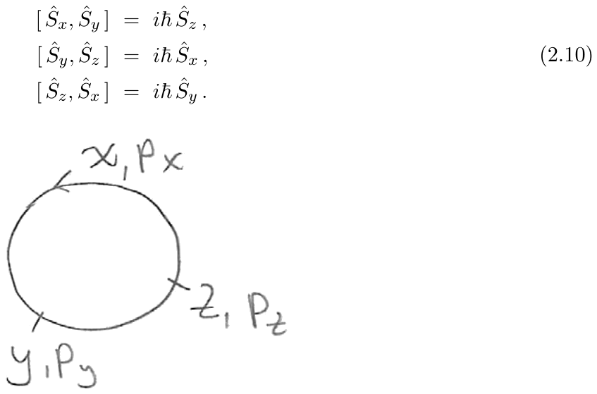

1. Ecuación de
Schrödinger en 3D y momento angular
Hasta ahora hemos considerado varios operadores hermíticos: el
operador de posición, el operador de momento y el operador de energía, o
hamiltoniano. Estos operadores son observables y sus autovalores son los
posibles resultados de medirlos sobre los estados. Aquí discutiremos
otro operador: el momento angular. Es un operador vectorial, igual que
el momento. Dará lugar a tres componentes, cada una de las cuales es un
operador hermítico y por tanto una magnitud medible. La definición del
operador de momento angular, como veremos, surge de su contraparte en
mecánica clásica. Sin embargo, las propiedades del operador serán
bastante nuevas y sorprendentes.
Habrá notado que el operador de momento tiene algo que ver con las
traslaciones. En efecto, el operador de momento es una derivada en el
espacio de coordenadas, y las derivadas están relacionadas con las
traslaciones. La forma precisa en que esto ocurre es mediante la
exponenciación. Consideremos una exponencial adecuada del operador de
momento:
donde
es una constante con unidades de longitud, lo que hace que el argumento
de la exponencial sea adimensional. Consideremos ahora que este operador
actúa sobre una función de onda
donde hemos simplificado el exponente. Expandiendo la exponencial
obtenemos
ya que reconocemos la familiar expansión de Taylor. Este resultado
significa que el operador
desplaza la función de onda. De hecho la desplaza una distancia
,
ya que
es el desplazamiento de
por una distancia
.
Decimos que el operador de momento genera traslaciones. De manera
similar, podremos mostrar que el operador de momento angular genera
rotaciones. De nuevo, esto significa que exponenciales adecuadas del
operador de momento angular actuando sobre funciones de onda las rotarán
en el espacio.
El momento angular puede ser de tipo orbital, que es el caso familiar
que ocurre cuando una partícula rota alrededor de algún punto fijo. Pero
también puede ser momento angular de espín. Este es un tipo de momento
angular bastante diferente y puede ser portado por partículas puntuales.
Buena parte de la matemática del momento angular es válida tanto para el
momento angular orbital como para el de espín.
Comencemos nuestro análisis del momento angular recordando que en
tres dimensiones los operadores usuales
y
son operadores vectoriales:
Las relaciones de conmutación son las siguientes:
¡Todos los demás conmutadores que involucran las tres coordenadas y
los tres momentos son cero!
Consideremos una partícula representada por una función de onda
tridimensional
que se mueve en un potencial tridimensional
.
La ecuación de Schrödinger toma la forma
Tenemos un potencial central si
.
Un potencial central no tiene dependencia angular, el valor del
potencial depende únicamente de la distancia
al origen. Un potencial central es esféricamente simétrico; las
superficies de potencial constante son esferas centradas en el origen y
por tanto es invariante bajo rotaciones. La ecuación anterior para un
potencial central es
Esta ecuación será el objeto principal de nuestro estudio. Notemos
que la función de onda es una función completa de
;
solo será invariante bajo rotaciones para los tipos más simples de
soluciones. Dada la simetría rotacional del potencial, nos vemos
llevados a expresar la ecuación de Schrödinger y las autofunciones de
energía usando coordenadas esféricas.
En coordenadas esféricas, el laplaciano es
Por lo tanto la ecuación de Schrödinger para una partícula en un
potencial central se convierte en
En lo que sigue, nuestro objetivo será establecer dos hechos:
La parte con dependencia angular del operador
puede identificarse como el cuadrado de la magnitud del operador de
momento angular
donde
Esto implicará que la ecuación de Schrödinger se convierte en
o desarrollando
La ecuación (1.7) es la ecuación relevante para el problema de dos
cuerpos cuando el potencial satisface
es decir, si la energía potencial es simplemente una función de la
distancia entre las partículas. Esto es cierto para la energía potencial
electrostática entre el protón y el electrón que forman un átomo de
hidrógeno. Por lo tanto, podremos tratar el átomo de hidrógeno como un
problema de potencial central.
2. El operador de momento
angular
Clásicamente estamos familiarizados con el momento angular, definido
como el producto vectorial de
y
:
.
Por lo tanto tenemos
Usamos las relaciones anteriores para definir el operador cuántico de
momento angular
y sus componentes, los operadores
:
Al elaborar esta definición no encontramos ambigüedades de
ordenamiento. Cada operador de momento angular es la diferencia de dos
términos, cada término consistente en el producto de una coordenada y un
momento. Pero notemos que en todos los casos se trata de una coordenada
y un momento a lo largo de ejes distintos, por lo que conmutan. Si
hubiéramos escrito
,
no habría importado, es lo mismo que el
de arriba. Es sencillo comprobar que los operadores de momento angular
son hermíticos. Tomemos
,
por ejemplo. Recordando que para dos operadores cualesquiera
tenemos
Dado que todas las coordenadas y momentos son operadores hermíticos,
tenemos
donde hemos movido los momentos a la derecha de las coordenadas en
virtud de conmutadores nulos. Los otros dos operadores de momento
angular también son hermíticos, así que tenemos
Todos los operadores de momento angular son observables.
Dado un conjunto de operadores hermíticos, es natural preguntarse
cuáles son sus conmutadores. Este cálculo nos permite ver si podemos
medirlos simultáneamente. Calculemos el conmutador de
con
:
Vemos ahora que estos términos dejan de conmutar solo porque
y
no conmutan. De hecho, el primer término de
solo deja de conmutar con el primer término de
.
Igualmente, el segundo término de
solo deja de conmutar con el segundo término de
.
Por lo tanto
Ahora reconocemos que el operador en el lado derecho final es
y por tanto,
Las relaciones de conmutación básicas son completamente cíclicas,
como se ilustra en la figura 1. En cualquier relación de conmutación
podemos ciclar los operadores de posición como en
y los operadores de momento como en
y obtendremos otra relación de conmutación consistente. También puede
verse que este ciclado lleva
,
observando (2.2). Por lo tanto afirmamos que no necesitamos calcular
conmutadores de momento angular adicionales, y (2.8) conduce a
Este es el conjunto completo de conmutadores de los operadores de
momento angular. El conjunto se conoce como el álgebra del momento
angular. Notemos que si bien los operadores
se definieron en términos de coordenadas y momentos, la respuesta final
para los conmutadores no involucra ni coordenadas ni momentos: ¡los
conmutadores de momentos angulares dan momentos angulares! Los
operadores
a veces se denominan momento angular orbital, para distinguirlos de los
operadores de momento angular de espín. Los operadores de momento
angular de espín
,
y
no pueden escribirse en términos de coordenadas y momentos. Son
entidades más abstractas; de hecho su representación más simple es como
¡matrices de dos por dos! Aun así, al ser momentos angulares, satisfacen
exactamente la misma álgebra que sus primos orbitales. Tenemos

Figura 1: Las relaciones de conmutación del momento angular
satisfacen la ciclicidad.
Hemos visto que el conmutador
está asociado al hecho de que no podemos tener autoestados simultáneos
de posición y de momento. Veamos ahora qué nos dicen los conmutadores de
los operadores
.
En particular: ¿podemos tener autoestados simultáneos de
y
?
Resulta que la respuesta es no, no podemos. Lo demostramos de la
siguiente manera. Supongamos que existe una función de onda
que es simultáneamente autoestado de
y
,
Haciendo actuar la primera identidad de conmutación de (2.9) sobre
tenemos
lo que muestra que
.
Pero esto no es todo; mirando los otros conmutadores del álgebra de
momento angular vemos que también se anulan al actuar sobre
y, como resultado,
y
deben ser cero:
En definitiva, suponer que
es un autoestado simultáneo de
y
ha llevado a
.
El estado es aniquilado por todos los operadores de momento angular.
Esta situación trivial no es muy interesante. Hemos aprendido que es
imposible encontrar estados que sean autoestados simultáneos no
triviales de dos cualesquiera de los operadores de momento angular.
Para operadores hermíticos que conmutan, no hay problema en encontrar
autoestados simultáneos. De hecho, los operadores hermíticos que
conmutan siempre tienen un conjunto completo de autoestados simultáneos.
Supongamos que elegimos
como uno de los operadores que queremos medir. ¿Podemos ahora encontrar
un segundo operador hermítico que conmute con él? La respuesta es sí.
Resulta que
,
definido en (1.11), conmuta con
y es una elección interesante para un segundo operador. En efecto,
comprobamos rápidamente
Así que deberíamos poder encontrar autoestados simultáneos tanto de
como de
.
Haremos esto en breve. El operador
es un operador de Casimir, lo que significa que conmuta con todos los
operadores de momento angular. Al igual que conmuta con
,
también conmuta con
y
.
Para entender mejor los operadores de momento angular, escribámoslos
en coordenadas esféricas. Para esto necesitamos la relación entre
y las coordenadas cartesianas
:
Hemos insinuado el hecho de que los operadores de momento angular
generan rotaciones. En coordenadas esféricas, las rotaciones en torno al
eje
son las más simples: cambian
pero dejan invariante
.
Ambas rotaciones en torno a los ejes
e
cambian tanto
como
.
Por tanto podemos esperar que
sea simple en coordenadas esféricas. Usando la definición
tenemos
Notemos que esto está relacionado con
ya que, por la regla de la cadena,
donde usamos (2.15) para evaluar las derivadas parciales. Usando las
últimas dos ecuaciones podemos identificar
Esta es una representación muy simple y útil. Confirma la
interpretación de que
genera rotaciones alrededor del eje
,
ya que tiene que ver con cambios en
.
Notemos que
es como un momento a lo largo del “círculo” definido por la coordenada
().
Los demás operadores de momento angular son un poco más complicados. Un
cálculo más largo muestra lo que sugerimos antes, que
3. Autoestados del momento
angular
Demostramos antes que los operadores hermíticos
y
conmutan. Nuestro objetivo ahora es construir las autofunciones
simultáneas de estos operadores. Serán funciones de
y
y las llamaremos
.
Las condiciones para que sean autofunciones son
Como corresponde a operadores hermíticos, los autovalores son reales.
Tanto
como
son adimensionales; hay un
en el autovalor de
porque el momento angular tiene unidades de
.
Para el autovalor de
tenemos un
.
Notemos que hemos escrito el autovalor de
como
y para
real esto siempre es mayor o igual que
.
De hecho,
va de cero a infinito conforme
va de cero a infinito. Podemos mostrar que los autovalores de
no pueden ser negativos. Para esto primero afirmamos que
y tomando
como una autofunción normalizada con autovalor
de
vemos inmediatamente que lo anterior da
,
como deseábamos. Para probar la ecuación anterior simplemente expandimos
y usamos hermiticidad
porque cada uno de los tres sumandos es mayor o igual que cero.
Resolvamos ahora la primera ecuación de autovalores en (3.1) usando
la representación en coordenadas (2.18) del operador
:
Esto determina la dependencia en
de la solución y escribimos
donde la función
recoge la dependencia en
,
todavía no determinada, de la autofunción
.
Exigiremos que
esté definida de forma única como función de los ángulos, y esto
requiere que
(Se podría haber intentado exigir que, tras un incremento de
en
,
la función de onda cambiara de signo, pero esto no conduce a un conjunto
consistente de
.)
No hay una condición análoga para
.
La condición anterior requiere que
Esta ecuación implica que
debe ser un entero:
Esto completa nuestro análisis de la primera ecuación de autovalores.
La segunda ecuación de autovalores en (3.1), usando nuestra expresión
(2.19) para
,
da
Multiplicamos por
y cancelamos
para obtener
Usando
podemos evaluar la acción de
sobre
y luego cancelar el factor común
para llegar a la ecuación diferencial
o, equivalentemente,
Queremos dejar claro ahora que podemos ver a
como una función de
escribiendo la ecuación diferencial en términos de
.
En efecto, esto da
La ecuación diferencial se convierte en
y dividiendo por
obtenemos la forma final:
Las
se llaman funciones asociadas de Legendre. No son polinomios. Todo lo
que sabemos en este punto es que
es un entero. Pronto descubriremos que
es un entero no negativo y que, para un valor dado de
,
hay un rango de valores posibles de
.
Para averiguar sobre
consideramos la ecuación anterior para
.
En ese caso escribimos
y las
deben satisfacer
Esta es la ecuación diferencial de Legendre. Intentamos encontrar una
solución en serie escribiendo
suponiendo que
es regular en
,
como conviene que sea. Sustituyendo esto en la ecuación diferencial
obtenemos que la anulación del coeficiente de
requiere:
Equivalentemente, tenemos
El comportamiento de los coeficientes para
grande es tal que, a menos que la serie termine,
diverge en
(dado que
,
esto corresponde a
).
Para que la serie termine, debemos tener
para algún entero
.
Simplemente podemos elegir
de modo que
,
haciendo de
un polinomio de grado
.
Hemos aprendido así que los valores posibles de
son
¡Esto es cuantización! Al igual que los valores de
están cuantizados, también lo están los valores de
.
Los polinomios de Legendre
están dados por la fórmula de Rodrigues:
Los polinomios de Legendre tienen una función generatriz
agradable
Algunos ejemplos son
es un polinomio de grado
de paridad definida.
Habiendo resuelto la ecuación para
,
debemos ahora discutir la ecuación general para
.
La ecuación diferencial involucra
y no
,
así que podemos tomar las soluciones para
y
como iguales. Se puede mostrar que tomar
derivadas de los polinomios de Legendre da una solución para
:
Como
es un polinomio de grado
,
la expresión anterior da un resultado no nulo solo para
.
Así tenemos soluciones para
Es posible probar que no existen otras soluciones. Se puede pensar en
las autofunciones
como determinadas primero por el entero
y, para un
fijo, hay
elecciones de
:
.
Nuestras autofunciones
,
con una normalización adecuada, se llaman los armónicos esféricos
.
Los armónicos esféricos correctamente normalizados para
son
Para
,
usamos
Así tenemos
Los primeros armónicos esféricos son
Al ser autoestados de operadores hermíticos con autovalores
distintos, los armónicos esféricos con subíndices
y
diferentes son automáticamente ortogonales. El complicado factor de
normalización es necesario para que tengan norma unitaria. Los armónicos
esféricos forman un conjunto ortonormal con respecto a la integración
sobre el ángulo sólido. Esta integración puede escribirse de varias
formas:
La afirmación de que los armónicos esféricos forman un conjunto
ortonormal con respecto a esta integración significa que
4. La ecuación de onda radial
Escribamos ahora un ansatz para la solución de la ecuación de
Schrödinger. Para esto tomamos el producto de una función puramente
radial
y un armónico esférico
Hemos puesto subíndices
y
para la función radial. No incluimos
,
porque, como veremos, la ecuación para
no depende de
.
Podemos ahora insertar esto en la ecuación de Schrödinger (1.13)
Dado que los armónicos esféricos son autoestados de
podemos simplificar la ecuación para obtener
Cancelando el armónico esférico común y multiplicando por
obtenemos una ecuación puramente radial
Ahora es conveniente definir
Esto nos permite reescribir toda la ecuación diferencial como
Esto se llama la ecuación radial. Se parece a la familiar ecuación de
Schrödinger independiente del tiempo en una dimensión, pero con un
potencial efectivo
que presenta el potencial original complementado por un término
centrífugo, un potencial repulsivo proporcional al cuadrado del momento
angular. Debido a este término, la ecuación radial es ligeramente
diferente para cada valor de
.
Como se anticipó, el número cuántico
no aparece en la ecuación diferencial. La misma solución radial
debe usarse para todos los valores permitidos de
.
Recordemos nuestra descomposición de la función de onda:
La condición de normalización requiere
La integral angular da uno, los factores explícitos de
se cancelan y obtenemos
En efecto,
juega el papel de una función de onda unidimensional para una partícula
que se mueve en el potencial efectivo a lo largo de
.
Dado que solo se permite
,
debemos considerar el posible comportamiento de la función de onda para
.
Podemos aprender sobre el comportamiento de la solución radial en el
origen bajo la suposición razonable de que la barrera centrífuga domina
el potencial cuando
.
En este caso, los términos más singulares de la ecuación diferencial
radial deben cancelarse entre sí, dejando términos menos singulares que
podemos ignorar en este cálculo de orden principal. Así que ponemos:
o equivalentemente
Las soluciones de esto pueden tomarse como
con
una constante a determinar. Entonces encontramos
lo que lleva a dos comportamientos posibles cerca de
:
Para
,
el segundo comportamiento no es consistente con la normalización, la
función de onda diverge demasiado rápido cuando
.
Para
,
el segundo comportamiento, que lleva a
,
de hecho no es una solución de la ecuación de Schrödinger. Por lo tanto
hemos establecido que para todo
debemos tener
Notemos que
se anula en
.
Incluso para
,
tenemos
y
se anula en
.
En efecto hay una pared infinita en
,
consistente con la imposibilidad de extender
a valores negativos.
Recordemos que la dependencia radial completa de la función de onda
se obtiene dividiendo
por
,
de modo que
Esto permite una función de onda constante no nula en el origen solo
para
.
Solo para
una partícula puede estar en el origen. Para
la “barrera” de momento angular impide que la partícula alcance el
origen.
Sarah Geller y Andrew Turner transcribieron las notas manuscritas
de Zwiebach para crear la primera versión en LaTeX de este
documento.
MIT OpenCourseWare
https://ocw.mit.edu
8.04 Física Cuántica I
Primavera de 2016
Para obtener información sobre cómo citar estos materiales o sobre
nuestras condiciones de uso, visite: https://ocw.mit.edu/terms.
Apéndice:
Lista de problemas 9 (Problem Set 9, 2016)
Física Cuántica I (8.04) — Primavera de 2016Departamento de Física del MITTarea 9Fecha de entrega: viernes 29 de abril de 2016, 12:00 del
mediodía21 de abril de 2016
Lectura:
Griffiths, sección 4.1.
Problema 1
Una comprobación numérica de la fase estacionaria. [10
puntos]
Hemos utilizado la fase estacionaria para determinar la dependencia
temporal de la posición de los picos en paquetes de ondas construidos a
partir de representaciones integrales. De manera más general, la
aproximación de fase estacionaria puede ayudarnos a obtener el valor de
la propia integral.
Consideremos la integral de una gaussiana centrada en
multiplicada por un factor de fase:
Queremos confirmar que
presenta un máximo en un valor
seleccionado por la fase estacionaria, y obtener el valor de
.
¿Cuál es la anchura
a media altura de la gaussiana? Es decir, ¿cuál es el mayor
tal que, para todo
con
,
la gaussiana sea mayor que la mitad de su máximo? Si tuviera que
realizar la integral numéricamente, ¿sería seguro integrar entre 1 y 3?
Explique su respuesta.
Use la fase estacionaria para hallar el valor crítico
de
para el cual
tendría la mayor magnitud. Para
,
escriba
como un desarrollo de Taylor alrededor de
hasta e incluyendo los términos cuadráticos en
.
¿Cuál es la excursión de la fase
para
?
Su resultado, expresado en unidades de
,
debería indicar que es una buena aproximación ignorar la variación de la
fase en el valor crítico. Hágalo así y realice a continuación la
integral resultante de forma analítica. La respuesta es un número
complejo. Escriba su resultado como una fase multiplicada por una
magnitud.
Realice la integral analíticamente usando la aproximación
cuadrática para la fase. Escriba su resultado como una fase multiplicada
por una magnitud.
Realice la integral numéricamente en función de
para el intervalo
.
Represente gráficamente el valor absoluto
.
¿Cuál es el valor de
para el
crítico? Compárelo con sus estimaciones anteriores. ¿Cuál es el valor de
que produce el mayor
?
Problema 2
Comprobación del teorema de Levinson en un ejemplo [10
puntos]
Para el potencial
para
,
para
,
y
para
,
calculamos en clase el desfase
,
obteniendo
con
A medida que la energía
tiende a cero,
.
¿Qué ocurre con
?
Demuestre que
tiende a cero, y por tanto podemos tomar
cuando
.
¿Cuál es el límite de
cuando
?
Explíquelo con detalle.
Llame
y escriba
como una función de
y
:
Escriba la función
.
Para construir las gráficas con Mathematica, resultó difícil usar
porque utiliza el rango
y las gráficas presentan discontinuidades. Una opción (sugerida por W.
Taylor) consiste en derivar la función
¡y luego integrarla de nuevo! Puesto que
para
,
podemos escribir:
Deje que el ordenador derive e integre. Si encuentra una forma más
sencilla de hacerlo, ¡háganoslo saber!
Represente las fases
en función de
para
.
Para
use
,
para
use
y para
use
.
En cada caso, explique cómo el resultado es consistente con el teorema
de Levinson e indique cuán cerca está
en el valor superior de
del valor esperado de
.
Problema 3
Dispersión por un escalón y una pared [10
puntos]
Consideremos el potencial
Calcule el desfase
en función de
.
Tendrá que considerar dos casos:
.
Llame
al número de onda para
.
Puede intentar hacerlo desde el principio (a modo de práctica). También
puede intentar usar el ejemplo resuelto en clase (y el problema 2 de
esta lista), donde en lugar de un escalón teníamos un pozo de
profundidad
,
y modificar la respuesta adecuadamente. Deje su respuesta en la forma
.
.
Puede intentar hacerlo desde el principio (a modo de práctica). También
puede intentar alguna continuación analítica del resultado del apartado
(a). Deje su respuesta en la forma
.
Represente
en función de
para un potencial con
(recuerde que
).
Problema 4
Dispersión por una delta de Dirac y una pared. [15
puntos]
Consideremos nuestro habitual potencial unidimensional con
para
,
y con
Dispersamos partículas de masa
y energía
contra este potencial. Tenemos
Calcule el desfase
.
Escriba la respuesta en la forma
donde
es una función que debe determinar. Explique cómo, conocido
,
se obtiene fácilmente la amplitud
que multiplica a la función ‘seno’ en la función de onda para
.
Para comprender las características de
,
calcule la aproximación de orden principal para
.
Discuta la dependencia del resultado en
.
Para
arbitrario, ¿en qué se convierte
cuando
?
Represente
,
el retraso temporal
,
y
en función de
para
.
¿Observa resonancias? En caso afirmativo, identifique los valores de
,
el retraso temporal
y la magnitud de
.
¿Es la gráfica de
consistente con el teorema de Levinson?
Problema 5
Algunos conmutadores y algunos valores esperados. [10
puntos]
Calcule los conmutadores
Calcule los conmutadores
Suponga que
es una autofunción de
.
Demuestre que
y
tienen valor esperado nulo en el estado
.
Suponga que
es una autofunción de
.
Demuestre que
y
tienen valor esperado nulo en el estado
.
Problema 6
Momento angular en coordenadas esféricas. [10
puntos]
Calcule las nueve derivadas parciales de las coordenadas
esféricas
respecto de las coordenadas cartesianas
,
expresando sus respuestas en términos de las coordenadas
esféricas.
Use los resultados anteriores para escribir
,
y
como operadores diferenciales en coordenadas esféricas.
Calcule
,
y
como operadores diferenciales en coordenadas esféricas y use sus
resultados para deducir la forma esperada de
como operador diferencial en coordenadas esféricas.